v5 研究备忘
v5.1 中国十年最好，换个市场不成立，不入围
项目愿景 在动态周期内，从多类资产里选出 Top N 强势 ETF 轮动持有，获得超额收益、稳定跑赢被动基准，同时把回撤控制住。
01v5 要解决什么：两个池子、前后两段，都稳定跑赢基准
愿景说“稳定跑赢被动基准”。把它拆成四格来看：E2 新口径只赢了 1 格，最简单的 A1 四格全赢。v5 立项，就是为了补上 E2 缺的那 3 格。
| 设计期，相对基准 每年多赚几个点 | 能排名的池子 | 当年真能买到的池子 | 四格 | ||
|---|---|---|---|---|---|
| 2006–10 | 2011–15 | 2006–10 | 2011–15 | ||
| E2 新口径（现在的唯一候选） | +19.6 | +0.5 | −12.3 | −2.0 | 1 格 只赢在 A 股大牛市，而且是买不到的池子 |
| A1（公开同行：沪深300、标普500 二选一，都不行就国债） | +19.8 | +4.1 | +11.5 | +5.1 | 4 格 三个品种，四格全赢 |
| v5 原版（已淘汰） | −0.6 | −5.0 | +9.6 | −5.0 | 1 格 补上了一格，丢了另一格 |
我们是怎么走到 v5 的
- 10-29 · 想法你提出把交易员的三个做法放进 v5：让赢家跑、小仓试错、按波动调仓。出发点是愿景里的“动态周期”。
- 10-31 · v4 体检四个微调都没过；体检把上面那张四格表摆了出来：E2 能买到的池子跑输基准，后五年几乎没有超额，而 A1 两个池子都赢。
- 10-31 · 换架构我根据 v4 的证据提议“两层 + 防守位”，你同意了。这一步出了问题。
原版为什么偏了：瞄准了机制，没瞄准目标
- 目标是四格，原版追的是机制。证据说“该不该持有”比“挑哪一只”可信，我就把架构改成先按大类判断，却没有回头检查这样能不能补上那 3 格。
- 入围门槛量错了地方。原版要入围，得在“能排名的池子”里两段都赢 E2，也就是在 E2 最强的那一格和它比；愿景要的是四格都赢基准。门槛和目标不一致，原版即使过了门槛，也不等于离愿景更近。
- 最强的线索被放在了对照栏里。A1 只有三个品种，却四格全赢。它的三个特点：只比大市场（没有同类挤占）、跑不赢现金就整体退到国债（不留空位）、只持一只（钱全部集中）。原版一个也没有用上。
v5 的成功标准（提议第 2 版，讨论定了再写进预注册）
- 先赢随机两个池子里，年化 ÷ 回撤都高于 95% 的“每月随便挑、满仓持有”（2000 次）；年化不低于随机的中位数。赢不了随机，后面都没有意义。
- 跑赢基准
四格都跑赢→ 十年合计在两个池子里都跑赢；四格逐一报告，任何一格都不能“明显跑输”（跑输的可信度达到 2 倍）。 - 复杂要有回报
四格合计不输 A1→ 两个池子都不明显输给 A1。 - 换个市场也成立同一套规则在美国上市的 ETF 上（2003–2026），也要跑赢随机和基准。
- 回撤不比基准深。
为什么改：十年里只有十来次独立的大判断，“四格全赢”主要看运气。一个真的每年多赚 5 个点的策略，四格全赢的概率只有 40%；A1 按它自己的成绩重来一次，也只有 49%。证明见第 2 节。改完并没有放松对 E2 的判断：E2 在可交易池十年合计跑输基准 7 个点，而且明显输给 A1（可信度 2.95 倍），照样不过关。
随机对照两个池子都做了。能排名的池子：E2 的年化 ÷ 回撤高于全部 2000 次随机。当年真能买到的池子：随机挑的年化中位数 15.1%、最大回撤约 −72%（早年能买的只有一只）；E2 的年化 8.7% 低于全部随机，年化 ÷ 回撤高于全部随机；A1 两项都高于全部随机。
用五步法看 E2：跑之前就能推出它会输在哪三格
| 步骤 | 做了什么 | 在 E2 上看到的 | 指向哪一格 |
|---|---|---|---|
| ① 写成“钱怎么分” | 把规则写成：输入排名，输出仓位 | 每个名额固定 1/N（N = 3、5、8）；合格的不够 N 只，空位拿现金。合格的越少，闲钱越多 | 可交易池两格 |
| ② 问五问 | 钱跟不跟强弱走、在哪挑、防守怎么进来 | 钱跟着强弱走、全场一起比、防守同场竞争，都对。但尺子是“涨幅 ÷ 波动”，国债靠稳就能排到股票前面 | 后五年 |
| ③ 数触发 | 在十年的信号上数 | 可交易池 2006–10 年，每月平均只有 1–2 只“跑赢现金又能买到”，E2 有 71% 的钱闲着；能排名的池子只有 13% | 可交易池前五年 −12.3 |
| ④ 画持仓 | 看每年想持有什么 | 2011–15 年 E2 的风险仓位约六成，其余是行业分散和国债；A1 近九成，2010–14 年大部分时间全仓标普500 | 两个池子后五年 +0.5、−2.0 |
| ⑤ 下判断 | 不跑回测，先预言 | 可交易池前五年会大幅跑输，后五年两个池子的超额都很薄 | 和四格表一致 |
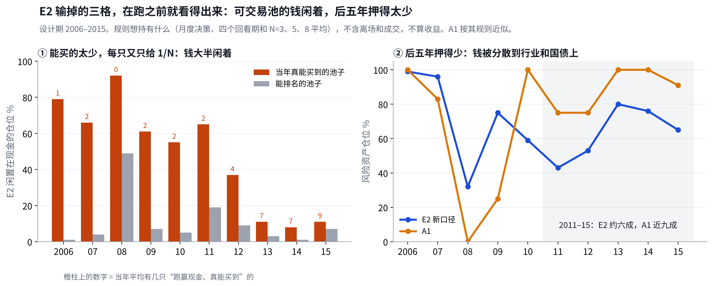
仓位比例从哪来：没有一个比例是人定的
备忘里出现的“防守加现金 37%”“A 股九成”这类数字，都不是设计出来的，是规则每月重新排名、十年平均下来的结果，作用是画出策略的样子。真正需要证明的，是“分钱的规则”本身。可选的只有三种：
| 分钱的规则 | 谁在用 | 证据 | 结论 |
|---|---|---|---|
| 每个名额固定 1/N，空位拿现金 | E2 | 合格的少时钱闲着：可交易池前五年闲置 71%，输掉两格 | 不用 |
| 合格的平分，不留空位 | A1（全仓一只） | A1 四格全赢；钱总在合格的品种上 | 采用 |
| 按得分高低加权 | — | “挑哪一只”的信号可信度只有 1.1–1.6 倍（2 倍以上才算可信），按分数加权等于把噪音放大。学术上也有结论：估计不准时，等权很难被打败（DeMiguel 等，2009） | 不用 |
策略核心：三版放在一起看
E2 新口径（现在的唯一候选）
- 所有容器一起排名
- 跑赢现金的才有资格，取前 N 名，每名 1/N
- 不够 N 名，空位拿现金
防守自然发生：股票一弱，国债就排进前几名。
v5 原版（已淘汰）
先分五个风险大类，各自判断开不开开着的类平分，每类买最强的一只五类都关掉才放国债、黄金
开着的类不论强弱都拿一份；防守是开关。
v5 设计稿第 3.2 版（定稿，第 2 节）
- 第一层选市场：A、港、美各用宽基，在 3–250 天铺满的尺子上比整体强度，只持最强的一个
- 两条腿各管一半仓位，见顶、见底镜像
- 都不该持有：国债、黄金，再不行现金
- 第二层选 ETF：选中的市场里取前 3 只
和 E2 的区别：先选市场再选 ETF；不定尺子，读尺子之间的关系；仓位分三档。
卡里的“排名”是怎么排出来的
- 每只算一个分数分数 = 这段时间的涨幅 ÷（每天涨跌的波动 × √天数）。意思是“涨得多、而且涨得稳”的排前面；两只涨幅一样，波动小的那只分数更高。
- 先过门槛同一段时间的涨幅必须高于现金（货币基金）的收益，否则不参加排名。
- 四张表回看 1、3、6、12 个月各排一张表，各管 1/4 的钱；周、月各调一次仓。
- 不同资产用同一把尺子股票、国债、黄金直接比分数。因为分数除了波动，国债这种涨得慢但很稳的资产，在股市转弱时能排到第一（2012 年 5 月就是这样）。
这把尺子比的是“涨势有多可信”，不是“涨了多少”。它是 E2 能自然防守的原因，也意味着它天然偏向波动小的资产，这是 v5 讨论中的问题之一。
它为什么能跟着市场变，又为什么会滞后
| 能跟着市场变，因为 | 代价是滞后，因为 |
|---|---|
| 没有固定配置：每月重新排名，哪个市场强，名额就去哪。E2 在 2006–07 年九成在 A 股，2008 年国债和现金近七成，2013–14 年美股近三成，都不是人为切换的 | 它只认已经发生的涨跌，不预测。底部回场慢：2009 年反弹少赚 39 个百分点 |
| 跑赢现金才买，弱的自动出局；国债黄金同场竞争，股票一弱它们就排上来 | 三周跌完的急跌躲不开（2015 年）；来回震荡时会来回换（2011、2014 年） |
| 四个回看期快慢搭配；单只回落 10% 就卖，不等下一次排名 | 要改掉滞后，得换一类工具（例如期权保护），不是再调参数 |
- 它是什么：E2 不变，同一个大类最多占前 N 名的一半，被截的名额顺延给下一名。
- 为什么是一半：说实话，这是我的判断，不是证据。我能讲出“不设上限有同类挤占、上限太小又压住大行情”，但证明不了一半比 40% 或 60% 好。拿不出证据的参数，按项目规矩不该进策略。
- 为什么搁置：它不碰“空位拿现金”，补不上可交易池的两格；它也不提高后五年的风险仓位。补不上目标的改动，做了也只是又一个 v4 式的小微调。
- 更正我之前的一句话：我写过“上限 1 名就回到原版的每类一个代表”。这不对：原版的病是开着的类不论强弱都平分，不是每类只派一个代表。冠军赛也是每类一个代表，但冠军之间还要再比，弱的冠军拿不到钱。
- 所有容器（股票、国债、黄金）一起排名
- 跑赢现金的才有资格，取前 N 名，每名 1/N
- 不够 N 名，空位拿现金
防守是自然发生的：股票一弱，国债就排进前几名。
- 五个风险大类各自判断：有没有跑赢现金的成员
- 跑赢的大类平分仓位，每类买最强的一只
- 五类都不跑赢时，才放国债、黄金，再不行拿现金
防守是一个开关：只有所有风险大类都转弱才打开。
同一天，E2 和 v5 原版怎么分仓
| 那一天 | 跑赢现金的 | E2 新口径 | v5 | 差在哪 |
|---|---|---|---|---|
| 2007 年 5 月底 大牛市 | 17 个全部跑赢，前 5 名都是 A 股 | A 股 100% | A 股医药、恒生、标普 各 1/3 | v5 把牛市仓位平分给了涨得慢的港股、美股 |
| 2011 年 7 月底 下跌途中 | 21 个里只有 3 个：主要消费、黄金、能源 | 三只各 20%，现金 40% | 主要消费 100% | 只要有一类在涨，v5 就全押，不留现金 |
| 2012 年 5 月底 震荡市 | 8 个，排第一、第二的是 10 年和 5 年国债 | 国债 40%，A 股 60% | 主要消费 100% | 国债排第一也买不到，因为 A 股类“开着” |
为了看得清，这里只用 3 个月回看、E2 取前 5 名；实际两者都是四个回看期、多组调仓的平均。标橙的三格就是 v5 原版输掉的原因，第 8 节用十年的持仓数据验证了它们。
02v5 设计稿第 3.2 版（定稿）：两层 FOF + 读尺子的规则
不挑尺子，也不定“看多长”：3 天到 250 天铺满，每把尺子先跟自己比，按它最近有多响定权重，再读水平、传导前沿和长尺子放缓。见顶、见底按镜像处理，仓位分两条腿；抗噪放在决策上。画像显示：震荡来回换的问题解决了，大跌后回场快了，代价是熊市里会被反弹拉进去几次。
① 从第 2 版到第 3.2 版：改了什么，为什么改
| 项目 | 第 2 版 | 第 3.2 版 | 为什么 |
|---|---|---|---|
| 尺子 | 一个动态周期（1–12 个月，按波动比伸缩） | 3–250 天铺满 28 把，不挑 | 你的判断：先定尺子再回看市场，是先射箭后画靶。铺满以后，“选哪几把”这个数就消掉了 |
| 权重 | — | 按响度自动调整 | 你的判断：牛市后段、下跌猛时看短，跌势衰竭移向长端，震荡接近平均（⑥） |
| 怎么读 | 一把尺子上的涨幅 | 水平、传导前沿、长尺子放缓 | 28 把尺子的速度只相当于 2–3 把独立的，前三个综合量解释 83–88%（下图 ①） |
| 加速度 | 逐把尺子看 | 看三个综合量和前沿怎么变 | 逐把尺子做差，噪音放大到相当于 9–10 把独立的（下图 ②） |
| 见顶、见底 | 只有“跑赢现金”的正负开关 | 两条腿各管一半，涨跌镜像 | 见顶 8/8、见底 15/18 抓到；见底时长尺子放缓区分力最强（⑤） |
| 离场 | 单只回落 10% 回宽基 | 单只按自己的前沿换；回撤面过半当天减；10% 留作硬闸门 | 只靠 10% 太被动；但十年 362 段持有里有 17 段（约 5%）在前沿过半之前就先跌到 −10%，都在急跌里，所以保留硬闸门兜底 |
| 防守 | 国债、黄金跑赢现金才持有 | 默认国债（像 A1） | 国债数据 2008 年才满一年，旧规则那年只能拿现金 |
| 抗噪 | 噪音带（只管换市场） | 保留；另加压缩和分步仓位 | 平滑越多反应越慢，这是数学上的限制，所以不在信号上再磨 |
| 动态周期（波动比） | 规则 | 降为对照组 | 新的读法必须跑赢它和“所有尺子等权平均”两个对照，才值得多出来的复杂度 |
② 尺子铺满，会不会更吵
不会。铺满多出来的是重复，不是噪音。相邻两把尺子用的几乎是同一段数据，相关在 0.92–0.96。真正的噪音在“加速度”上：做差会把短期的抖动放大。
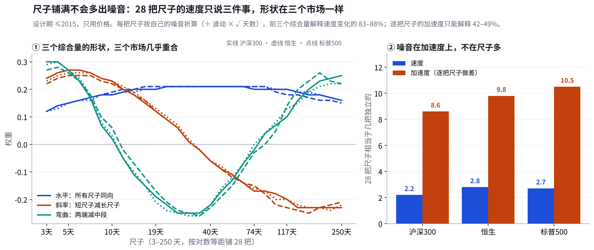
| 每天只看这几个数 | 是什么 | 对应你说的 | 形状怎么定 |
|---|---|---|---|
| 水平 | 28 把尺子的平均速度 | 速度：整体在涨还是在跌；它的变化就是加速度 | 写死，不用数据估。三个市场里数据自己估出的形状几乎一样，说明它们是数学结构 |
| 斜率 | 短尺子减长尺子 | 谁领先；在收尺子还是放尺子 | 同上 |
| 弯曲 | 两端减中段 | 中段先熄火，还是中段最响 | 同上 |
| 传导前沿 | 速度已经转负的尺子占几成 | 你说的传导、过山车 | 只数个数，不用权重 |
每把尺子先按自己的噪音折算（涨幅 ÷ 平常的日波动 × √天数），这是“跟自己比”的第一步；需要判断“高不高”的地方，一律用它在自己过去历史里的排名。利率的期限结构也是几十个期限压成水平、斜率、弯曲三个数来读（Litterman、Scheinkman 1991），我们的结构和它一样。
③ 传导：回调还是见顶，看转负传到了哪里
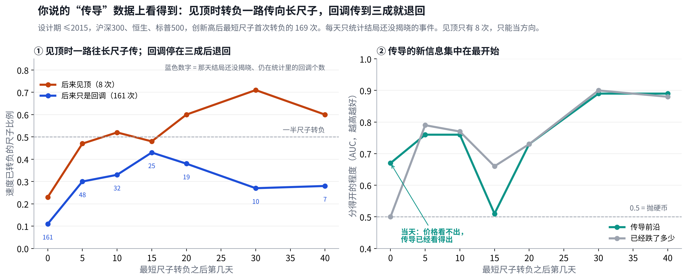
| 规则：一半以上的尺子转负，判为见顶 | 上一轮：逐把尺子看加速度 | 这次：传导前沿过半 | 判定 |
|---|---|---|---|
| 8 次见顶抓到 | 4 次 | 8 次 | 更好 做砝码够用，做开关不够 |
| 回调被当成见顶 | 45 次 | 22 次 | 更好同上 |
| 报警里真是见顶的 | 8% | 27% | 更好同上 |
| 报警时已经承受的回撤 | — | 约 4.5% | 见顶时中位 5 天报警；误报中位 10 天 |
- 新信息在最开始：最短尺子刚转负的那天，价格跌了多少完全分不开见顶和回调（0.50），转负的尺子有几把已经能分开一部分（0.67）。5 天以后，前沿基本就是在反映价格已经跌了多少。
- 传导的本质是持续性：一次下跌持续下去，自然会累积到越来越长的尺子上；马上反弹，就传不过去。学术上对应方差比检验（Lo、MacKinlay 1988）和异质市场假说（Müller 等 1997）。
- 过山车：一波一波从短尺子出发、没到长尺子就消散的波浪。前沿反复过不了半，本身就说明是震荡，不需要单独一套规则。
事件：沪深300、恒生、标普500 在 2015 年以前创 60 天新高后，最短尺子第一次转负，共 169 次。每天只统计结局还没揭晓的事件。只有 8 次见顶，而且事件定义漏掉了 2007-10、2015-06 两个大顶；“过半”是跑之前写的，但这个数是我选的，要检验 0.4–0.6 结论变不变。
④ 抗噪放在决策上，不在信号上
| 办法 | 怎么做 | 会不会让反应变慢 |
|---|---|---|
| 压缩 | 28 把尺子合成几个数，噪音互相抵消 | 不会：短尺子的反应保留在斜率和前沿里 |
| 回差 | 换市场要强出一倍噪音；在两条线之间来回抖不交易 | 不会：只在门槛附近起作用，信号本身一天不晚 |
| 分步仓位 | 满仓、一半、离场三档，不是全进全出 | 不会：抖一下只是小幅调仓；误报的代价变小 |
| 再平滑信号 | 例如把速度再做移动平均 | 会：误报少了，但见顶和回场都晚，不用 |
⑤ 见底是见顶的镜像：逻辑对称，读的尺子不同
把见顶的传导检验原样镜像到见底：在新低附近、最短尺子刚转正时，看“转正的尺子过半”能不能分开真反转和熊市反弹。
| 见顶：转负过半 | 见底：转正过半 | 判定 | |
|---|---|---|---|
| 真转折抓到 | 8/8 | 15/18 | 见底更好认 |
| 误报 | 22 次回调 | 18 次熊市反弹 | 见底更好认同上 |
| 报警里真是转折的 | 27% | 45% | 见底更好认同上 |
| 区分力最强的信号 | 转负从短尺子传向中尺子 | 长尺子的下跌在放缓（0.68–0.79） | 和你的 P4 一致：“从次一级尺子起，向下的加速度逐步放缓” |
第 3 版回场慢（2008 年 94 天），原因在规则不对称：离场看前沿（数尺子，快），回场要等 28 把尺子的平均转正（被长尺子拖住，慢）。第 3.1 版按镜像改，见规则第 3 条。
⑥ 尺子的权重：按“响度”自动调整
你的判断：牛市越往后，资金成本越高、回调越急，短尺子越重要；下跌一波比一波猛就保持看短，一波比一波弱就移向长端；震荡时接近平均。做法是每把尺子的权重 = 它最近有多响，在自己历史上排第几，不新增参数。
| 行情 | 权重重心（天） | 和你的描述 |
|---|---|---|
| 2008 上半年第一波暴跌（沪深300） | 19 | 对上 下跌猛，重心在短端 |
| 2008 下半年第二波 | 21 | 对上 下一波仍猛，保持短 |
| 2008-11 见底后三个月 | 30 | 对上 跌势衰竭，移向长端 |
| 2015 年 3–4 月加速（恒生） | 19 | 对上 牛市后段，移向短端 |
| 2015 加速到见顶（沪深300） | 33 | 没对上 长尺子同样响 |
| 2011–13 震荡 | 20 | 偏短 不是平均 |
⑦ 规则（第 3.2 版，定稿）
每周最后一个交易日决定加仓、换市场；减仓和单只替换每天看；都在下一个交易日收盘成交
- 量：每个序列在 3–250 天的 28 把尺子上算速度 = 超出现金的涨幅 ÷（过去 250 天的日波动 × √天数）。权重 = 每把尺子最近一段（自己的长度）平均有多响，在自己历史上的排名；历史不足一年时等权。读出三个数：水平（加权平均速度）、转负前沿（速度为负的尺子占几成）、长尺子放缓（63–250 天 10 把尺子的平均速度连续两个月都比前一个月高）。
- 第一层·选市场：A 股（沪深300）、港股（恒生）、美股（标普500）里，至少一条腿成立才有资格，持水平最高的一个；另一个市场的水平要强出一倍噪音才换。
- 两条腿，各管一半仓位：腿一 = 宽基的转负前沿不到一半，而且这个市场的回撤面不到一半（回撤面 = 市场里有几成 ETF 的前沿已过半，至少 3 只 ETF 时才看）；腿二 = 水平大于零，或长尺子连续两个月放缓。两条都成立满仓，一条半仓，都不成立离场。每天看，只减不加：哪天一条腿失效，当天就减；加仓等周末。
- 防守默认国债（像 A1）：没放进风险市场的部分放 10 年国债；黄金明显更强才换黄金；国债自己在跌才拿现金。
- 第二层·选 ETF：选中的市场里，按水平取水平大于零、前沿不到一半的前 3 只平分；不足 3 只就平分给够格的；一只都没有就持宽基。
- 单只替换：持有的 ETF 自己一半以上的尺子转负，或从买入后高点回落 10%（硬闸门，保险），哪个先到按哪个，当天换成排名下一只；换上去的也降速、回撤面扩大，就由第 3 条接回第一层。
新增自由度 4 个① 前沿门槛“一半”（尺子之间、ETF 之间、单只三处用同一个数）；② 长尺子连续两个月放缓；③ 噪音带“一倍”；④ 第二层取前 3。10% 硬闸门沿用 E2 原有的数，不算新增。结构定的数：3 天、250 天、28 把、一年历史、回撤面至少 3 只。
⑧ 事前画像和跑前五问：长成什么样，值不值得跑
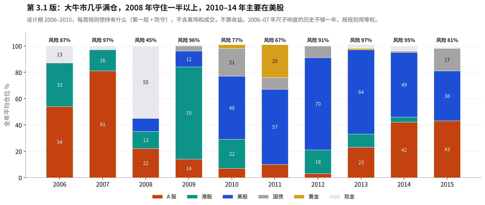
| 转折（沪深300 涨跌对照） | 第 2 版 | 第 3.1 版 | 第 3.2 版（定稿） | 判定 |
|---|---|---|---|---|
| 2007-10 见顶，减到半仓 | 45 天，−19%（清零） | 38 天，−17%（清零） | 27 天，−15% | 更早 |
| 2009-08 见顶，减到半仓 | 283 天（清零） | 178 天 | 8 天，−10% | 明显更早 |
| 2015-06 见顶，风险清零 | 21 天，−27% | 21 天，−27% | 17 天，−21% | 更早 |
| 2008-11 见底，回到半仓 / 满仓 | 10 天 / 10 天（+19%） | 10 天 / 45 天 | 10 天 / 45 天（+19% / +26%） | 和第 2 版一样快回到半仓 |
| 2008 熊市 | 风险 23% | 风险 30%，现金 70% | 风险 16%，国债 84% | 更好 |
| 2009 年持仓 | — | 港股 70%，A 股 14% | A 股 55%，港股 25% | 更好 |
| 平均风险仓位 | 81% | 80% | 71% | 代价 牛市里常被减到半仓 |
| 仓位档位变动 | — | 十年 103 次 | 十年 187 次 | 代价 三分之二一个月内变回 |
| 跑前五问 | 第 3.2 版的回答 | 判定 |
|---|---|---|
| 1. 钱是否跟着强弱走 | 市场按水平选最强的一个，ETF 按水平取前 3；两条腿只决定持多少 | 是 |
| 2. 挑选发生在哪一层 | 第一层在三个市场之间，第二层在市场内部；B（全部一起排）只做对照 | 清楚 |
| 3. 防守怎么进来 | 分步进来：一条腿失效，一半去国债；国债自己在跌才拿现金 | 不是开关 |
| 4. 每个开关触发几次 | 十年档位变动 187 次（每年 7–30 次，约三分之二一个月内变回）；当天减仓 76 次；单只离场按原因：周度换掉 176、自己的前沿 120、市场退出 40、硬闸门 17（都在急跌里）；单只持有的最大回撤最深 −15.8%；第二层平均持 2.3 只 | 开关都在动 来回晃写进疼痛表 |
| 5. 去掉信号还剩多少 | 预注册写死对照：随机选市场、随机选 3 只，仓位档位照抄，2000 次 | 跑时报告 |
画像只算规则想持有什么，不算收益；2015 年以前的数据，记为探索，不计入判据 ⑤。2006–07 年还没有国债数据，防守只能是现金。
⑨ 预期疼痛表：每种行情下，事先认下的代价
冻结后不改，每次转折都对照复盘：落在范围里是正常代价；超出范围，说明策略的性格变了，要查原因。范围来自设计期画像和长历史上的 40 次熊市（标普 1955–2003，恒生、日经 1987–2015）。
| 行情 | 规则会怎么动 | 事先认下的代价 | 超出就要查 |
|---|---|---|---|
| 单边牛市 | 持有领先市场；回调时常被减到半仓 | 平均风险仓位 70–90%；涨得多但波动更大的市场可能排在后面（2006–07 年一到三成在港股） | 牛市里平均风险仓位低于 60% |
| 急跌（几天内跌 10% 以上） | 前沿来不及过半，硬闸门在 −10% 卖出 | 每段持有最多亏约 10% 加成交滑点；急跌后马上反弹时会错过反弹 | 单只卖出时已跌超过 15% |
| 见顶、牛转熊 | 单只先换；回撤面过半当天减半；水平转负且长尺子还在恶化时清零 | 1–4 周减到半仓，此时离顶已跌 10–20%；2–5 周清零 | 6 周还没减到半仓，或减半时已跌超过 25% |
| 熊市中的反弹 | 长尺子要连续两个月放缓才算数 | 熊市平均风险仓位 15–30%；偶尔被拉进去半仓再打出，每次付 2–5% | 熊市平均风险仓位超过 40% |
| 大跌后见底 | 先回半仓，两条腿都成立才满仓 | 1–5 周回到半仓，错过底部以来 10–25%；满仓要 5–10 周；底部附近可能早进来一次又被打出 | 3 个月还没回到半仓 |
| 反弹月份（大势跌、本月涨） | 趋势规则天生落后 | 相对基准的超额大概率为负，这是趋势跟踪的结构性代价 | 超额 t 值低于 −2（入围第 6 条） |
| 震荡 | 前沿在一半附近来回晃 | 每年档位变动 15–30 次，六到七成一个月内变回；每年多花约 1–2 个百分点成本 | 一年超过 40 次 |
| 两个市场接力 | 噪音带要强出一倍噪音才换 | 慢 1–4 周；领先不明显时会一直留在原市场 | 另一市场的水平连续 3 个月更高却没换 |
“来回晃”的根源是前沿在门槛附近摆动，治它要给门槛加回差（多一个数字），留给 v6（D33-4）。
定稿了，进入设计期检验预注册 v5.1（设计稿第 3.2 版）已送 Reviewer R1，签收后冻结，Dev 实现，Reviewer 独立复算读数，然后跑设计期 2006–2015 两个池子和全部对照。长历史复核通过（判据跑前写死）：40 次熊市里见顶后减到半仓中位 10–14 天（12 个月动量 39–72 天），见底后回到半仓中位 14–38 天（104–267 天）。
像 FOF 一样分两层：第一层决定钱放在 A、港、美哪个市场，还是撤到国债、黄金、现金；第二层在选中的市场里挑 ETF。看多长跟着市场的快慢伸缩，只有信号明显高于噪音才动。
① 四个动作，设计期里做到了没有
| 行情 | 要做到的 | 怎么做 | 做到了吗 | 关键数字（沪深300，和 E2 式比） |
|---|---|---|---|---|
| 单边牛市 | 赢家通吃 | 按涨幅比 A、港、美，只持最强的一个 | 做到 | 2006–07 年七到九成在 A 股；2010–14 年三到六成在美股 |
| 牛转熊 | 少痛离场 | 牛市末段波动上来，周期自动变短 | 大部分做到 | 2015 年见顶 少跌 25 个点；2009 年底 少跌 12 个点；2007 年差不多 |
| 大跌之后 | 快速回场 | 周期在市场平静前一直保持短；回场先买宽基 | 部分做到 | 2008 年底 早 20 天；平静中慢慢形成的底（2014 年 3 月）晚 74 天、多错过 5 个点 |
| 震荡 | 不被来回甩 | 换市场要求强度差超过一倍噪音 | 大部分做到 | 十年换手 153 → 92 次，回场速度不变；震荡年份仍有每年 13–17 次 |
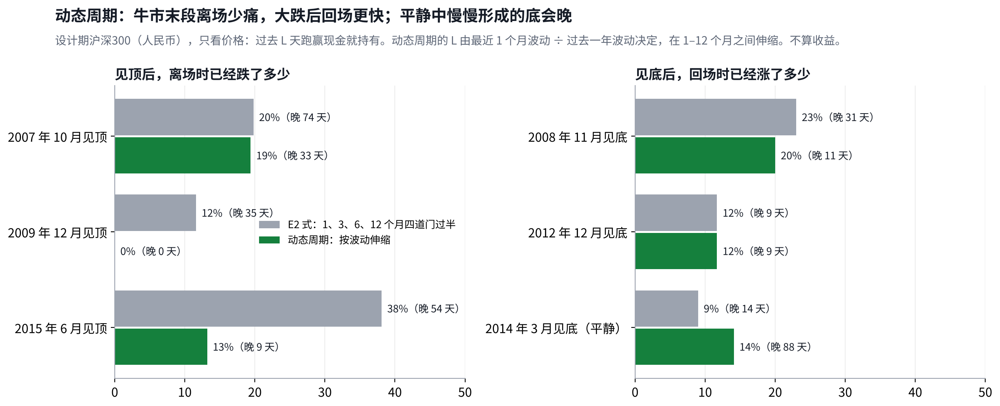
② 为什么震荡时换得太勤：复盘一轮完整的走势
你描述的一轮走势是：牛市里量加速度的尺子越用越短，见顶时加速度衰竭；转熊先在短尺子上向下加速，再传到长尺子；底部短尺子的加速度趋于零；反弹时长尺子在动、短尺子平稳；震荡时都稳定在一个区间里。我用 3 天到 120 天七把尺子量沪深300 的加速度，看每个阶段哪把尺子在响：
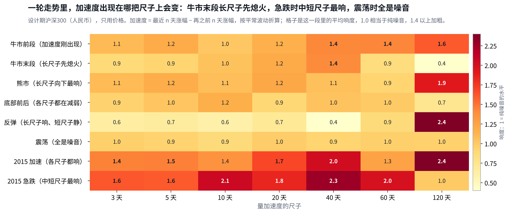
| 阶段 | 你的描述 | 数据 | 对上了吗 |
|---|---|---|---|
| 牛市末段 | 尺子越用越短，见顶时加速度衰竭 | 120 天尺子先熄火（0.4），40 天还在响（1.4） | 对上 |
| 转熊、急跌 | 先在短尺子上向下加速 | 2015 年急跌：10–60 天最响（1.8–2.3），120 天还没反应（1.0） | 对上 |
| 底部 | 短尺子的加速度趋于零 | 2008 年底各尺子都回到噪音附近（0.7–1.2） | 大致对上 |
| 反弹 | 长尺子在动，短尺子平稳 | 2009 年上半年 120 天最响（2.4），3–40 天只有 0.4–0.7 | 对上 |
| 震荡 | 稳定在一个区间 | 2011–14 年七把尺子全在 0.9–1.0，就是噪音 | 对上 |
响度 = 这一段里加速度的平均大小，按平常的波动折算；1.0 相当于纯噪音。设计期只有一轮完整的牛熊（2006–09）和一次 2015 年，样本很少。
所以换得勤的原因很清楚：震荡时根本没有信号，规则却每周都在做决定。设计期第一层一共换了 146 次，其中 60% 发生在信号还不到噪音一半的时候，90% 不到噪音的一倍；三分之二是在 A、港、美之间来回换“第一名”。按你说的“在更宽的频率里做更确定的选择”，加一条噪音带。
| 噪音带管什么 | 十年换几次 | 2008 年底见底后回到风险市场 | 判定 |
|---|---|---|---|
| 不加 | 153 | 10 天 | 换得太勤 |
| 换市场、进场、离场都管（一倍噪音） | 49 | 122 天 | 不用 回场被拖了 4 个月 |
| 只管换市场（一倍噪音） | 92 | 10 天 | 采用 半倍、两倍分别是 104、86 次，结论不变 |
为什么第二行不行：大跌之后，“过去一年的平常波动”里装满了暴跌，噪音被算得很大，信号很难超过它，进场就被拖住了。换市场是在两个市场之间比，不受这个影响。第三行是看到第二行的结果后改的，两次都登记了。
③ 规则（草案）
每周最后一个交易日决定，下一个交易日收盘成交
- 动态周期：每个市场各自算“最近 1 个月的波动 ÷ 过去一年的平常水平”，看它在自己历史上排第几。越剧烈，看的周期越短，最短 1 个月；越平静越长，最长 12 个月。
- 第一层·选市场：A 股（沪深300）、港股（恒生）、美股（标普500）各算“动态周期里的涨幅 − 同期现金”，大于零才有资格，持有最强的一个。
- 防守：三个市场都没资格，国债、黄金按同样的办法比，取跑赢现金的那个；都不行拿现金。
- 噪音带：只管换市场。另一个市场要比当前持有的强出一倍噪音（噪音 = 平常的日波动 × √周期天数）才换；进场、离场仍按“跑赢现金”的正负，不设噪音带，保住大跌后的快速回场。
- 第二层·选 ETF：在选中的市场里，宽基和行业、主题 ETF 一起，按同一个动态周期的涨幅排名，取前 3 只平分。
- 回场先买宽基：从防守或现金回到某个市场后，最初的一个动态周期内只持宽基，之后才按第 5 条挑行业。
- 单只离场：第二层的 ETF 从持有期高点回落 10% 就卖，钱回到这个市场的宽基。
和上一稿的区别：第 4 条由“分三批进出”改为“噪音带，只管换市场”，依据是上面的复盘和测试。新增的自由度 4 个：动态周期的伸缩方式、噪音带、第二层取前 3 只、回场先买宽基；1 个月、12 个月两端和 10% 离场沿用 E2。“一倍噪音”是统计上常用的界线（约等于一个标准误），不是照设计期挑的；要求它和半倍、两倍都有效才算数。
④ 每条规则的依据有多硬
| 规则 | 来自你的哪句话 | 依据有多硬 | 最大的风险 |
|---|---|---|---|
| 动态周期 | “单边时周期要变短，震荡时动态调节阀门” | 外部研究 + 设计期 Kaufman 自适应均线；Daniel、Moskowitz | 第一版失败后才改用波动，结论要打折扣 |
| 只持最强的一个市场 | “赢家通吃”“每个阶段选出胜者” | 外部研究强 跨市场动量两百年；双动量 | 三个市场里押一个，十年只有十来次判断 |
| 噪音带 | “在更宽的频率里做更确定的选择” | 设计期诊断 60% 的换仓发生在半倍噪音以内；半倍到两倍结果接近 | 两个市场接力时（例如 A 股转美股）会慢一两周换过去 |
| 第二层选 ETF | “市场在分化，指数靠少数权重股带” | 结构判断 设计期行业排名的信号偏弱（1.6 倍） | 价值主要寄望于未来更分化的市场，设计期证明不了 |
| 回场先买宽基 | “大跌之后快速回场” | 外部研究强 动量崩溃：反弹由跌得最惨的品种领涨 | 2009 年的教训我们看过，要登记 |
⑤ 事前画像：第一层每年会持有什么
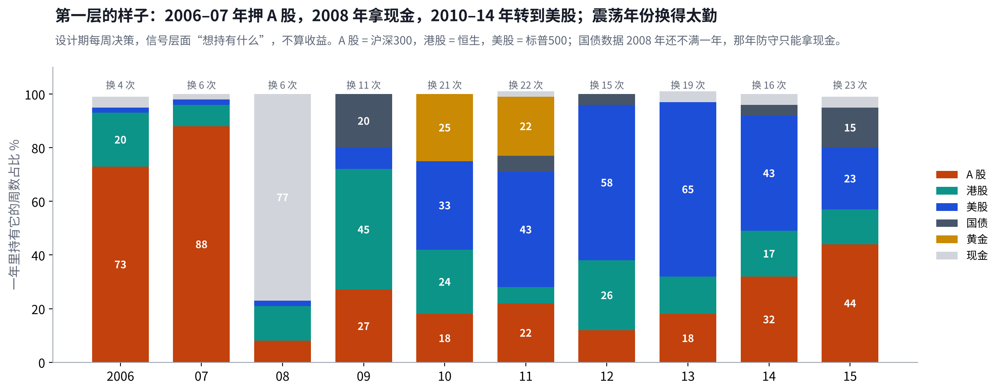
- 和 E2 比：2006–08 年一样（押 A 股、拿现金）；2012–14 年七成以上在美股，E2 分散在 A 股行业、美股和国债里。这是最可能补上 E2 后五年短板的地方。
- 和 A1 比：多了港股、黄金和动态周期；2009 年先回到港股（51%）和 A 股，A1 那年几乎全在国债。
- 震荡年份：2010–11 年仍每年换 13–17 次，在港股、美股、国债之间来回，这是剩下的主要代价。
画像只算“规则想持有什么”，含噪音带，不含第二层、离场和成交，不算收益。国债数据 2008 年还不满一年，那年防守只能是现金。脚本 results/v5/diag/design/。
⑥ 预期疼痛表（初稿，第 3 版定稿后重写）：每种行情下，事先认下的代价
下面是根据设计期信号写下的预期，不是收益承诺。封板时冻结，之后每次转折都对照复盘：落在范围里是正常代价；超出范围，说明策略的性格变了，要查原因。
| 行情 | 规则会怎么动 | 预期代价 | 超出就要查 |
|---|---|---|---|
| 单边牛市 | 领先市场持有八成以上的周数 | 主升段前 1–2 个月还没认出领先者，少赚这一段 | 领先市场持有不到一半的周数 |
| 牛转熊 | 1–3 周内先转到别的市场，1–2 个月内全部撤到防守或现金 | 见顶后多跌 10–20% 才全部撤出 | 多跌超过 25%，或 3 个月还没撤完 |
| 大跌之后 | 2–4 周内回到某个风险市场，先买宽基 | 错过底部以来 10–25% 的涨幅；假底回场后再离场，每次付 3–5% | 2 个月还没回场，或连续三次假底 |
| 平静中慢慢起来 | 周期被拉长，回场晚 | 晚 3–6 个月，少赚 5–15% | 晚超过 9 个月 |
| 震荡 | 在几个市场和国债之间换 | 每年换 8–17 次，每次假换付 1–3% | 一年超过 20 次 |
范围来自设计期沪深300 和标普500 的信号诊断（离场、回场的天数和涨跌），只有两三次大转折，范围偏宽。别的市场检验后再收紧。
写预注册之前还差一份证据美国上市 ETF 2003–2026 的数据（Grok 正在下载），在 2008、2011、2018、2020、2022 年多次转折上检验动态周期和噪音带，并用同样的办法收紧预期疼痛表。其余三项（噪音带、可交易池随机对照、预期疼痛表初稿）已经做完。
冠军赛修的是 E2 有机制原因的毛病：可交易池的钱闲着。能排名池后五年那一格，A1 是靠押中美股赢的，我们的数据分不出那是本事还是运气，所以不为它改规则。
| 决定 | 选择 | 瞄准 | 证据 | 反面证据和代价 |
|---|---|---|---|---|
| ① 合格的不够时 | 平分给合格的，不留空位 | 可交易池两格 | E2 闲置 71% 输掉两格；A1 从不留空位 | 探索期“把空位填满”更差，但那次是把名额给了不合格的；这次只给合格的。代价是更集中，单个市场急跌时伤得更重 |
| ② 在哪里比 | 冠军赛：每类一个冠军，冠军之间再比 | 四格 | A 股 14 个容器只相当于 1.37 个独立选择，全池约 2.35 个；类内挑选可信度 1.6 倍，比没有好 | A 股独强时 A 股最多一个名额：能排名池前五年 A 股从九成降到六成多 |
| ③ 持几只 | k = 1、2、3 三路平均 | 四格 | 独立选择约 2 个；三路平均不押单个数字，和 E2 的 N = 3、5、8 同理 | “只持最强一类”（k = 1）的结果我们已经看过，很好；正因为看过，才不单独选它 |
| ④ 防守怎么进来 | 保留 E2 的同场竞争，不改 | 先求不输 | 专门诊断：国债靠稳排到风险冠军前面时，下个月谁赚得多没有定论（可信度 −0.29 倍：熊市年份国债赢，牛市年份风险冠军赢）。没有证据就不改。另一种做法是像 A1 那样“风险的不合格才让国债补位”，它的依据在外部，但会让 2008、2011 年的风险仓位分别从 32%、43% 升到 44%、67% | 能排名池后五年国债仓位比 E2 更高，那一格可能补不上；按下面的分析，不为这一格改规则 |
| ⑤ 回看期、10% 离场 | 不变 | — | 四个回看期单看是 60 天最强（可信度 1.78 倍），但只挑 60 天就是照着结果选；10% 离场在 8–15% 是一片平台 | 20 天的开关每年切换约 5 次，来回换的成本还在 |
事前画像
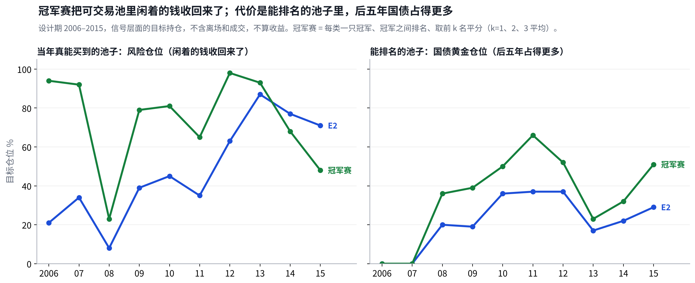
| 四格 | E2 新口径 | 冠军赛预计 | 为什么 |
|---|---|---|---|
| 能排名的池子 2006–10 | +19.6 | 略低 | A 股独强时最多一个名额，A 股从九成降到六成多 |
| 能排名的池子 2011–15 | +0.5 | 补不上，可能更差 | 风险仓位 55%（E2 64%），国债占了名额 |
| 真能买到的池子 2006–10 | −12.3 | 明显改善 | 闲置的钱从 71% 降到 26% |
| 真能买到的池子 2011–15 | −2.0 | 改善 | 闲置的钱从 26% 降到 8%，风险仓位 74%（E2 67%） |
押最强的大市场：是机制，但我们的数据证明不了
A1 赢下“能排名池后五年”那一格，靠的是 2010–14 年几乎全仓标普500。要不要为这一格改规则，先要回答：“押最强的大市场”是能事先写成规则的机制，还是那几年美股恰好最强？跑之前我先写下判定：领头市场下个月跑赢三个市场的平均，可信度到 2 倍、前后两段都为正、去掉最好的一段仍为正，才算机制。
| 按过去多久选领头市场 | 十年里几段领先期 | 下月多赚（月均） | 可信度 | 去掉最好一段后 | 判定 |
|---|---|---|---|---|---|
| 3 个月 | 39 | 0.67% | 1.36 倍 | 0.04% | 分不开 |
| 6 个月 | 26 | 0.84% | 1.78 倍 | 0.05% | 分不开 |
| 12 个月（A1 用的） | 12 | 0.88% | 1.83 倍 | 0.20% | 分不开 |
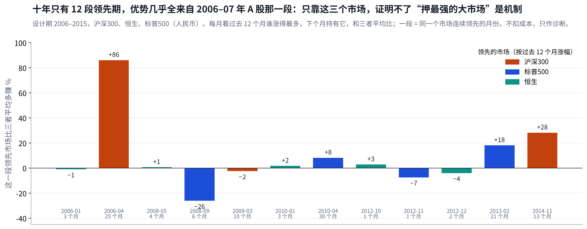
- 我们的数据里只有三个大市场：2006 年以前就有数据的只有 A 股、港股、美股。十年按 12 个月选只有 12 段领先期，优势几乎全来自 2006–07 年 A 股那一段。A1 在 2010–14 年押美股，本质上是一次判断，从它自己的成绩看不出是本事还是运气。
- 外部证据说这是真机制：在几十个国家的股指、债券、外汇、商品里，过去一年涨得多的接下来继续强，这在学术研究里反复出现（Asness、Moskowitz、Pedersen 2013）；有人把多资产动量的历史拉到 200 多年，各类资产里都成立，但也有持续几十年表现不好的时期（Geczy、Samonov）。A1 的原型双动量，在发表前的 1950–73 年和发表后的 2012–18 年都表现不错。
- 结论：机制是真的，但只在三个市场之间押，宽度太小，十年的结果主要看那一两次判断。要验证它，得靠更多市场，也就是别的市场检验（美国上市 ETF 有二十多个国家和行业），不能靠中国这十年。
这对成功标准意味着什么：四格全赢主要看运气
按设计期的实际波动做模拟：假设一个策略真的比基准每年多赚若干个点，重来很多次，看它多大概率四格全赢。
| 策略真实的超额（每年） | 四格全赢的概率 | 十年合计两个池子都赢的概率 |
|---|---|---|
| +3 个点 | 28% | 59% |
| +5 个点 | 40% | 73% |
| +8 个点 | 60% | 88% |
| A1 按它自己的成绩 | 49% | — |
所以“四格全赢”这道门槛会把四成真正好的策略误判成失败，A1 自己也只有一半的机会通过。门槛应该设在证据够得着的地方：十年合计、两个池子都要赢；任何一格不能明显跑输；再加随机对照和别的市场两份更宽的证据。改动见第 1 节的成功标准。
我的判断冠军赛修的是一个有机制、有证据的毛病（可交易池的钱闲着，E2 因此明显输给 A1），这是 v5 该做的事。能排名池后五年那一格，不为它改规则：本地数据分不出 A1 是本事还是运气，改了就是照着答案出题。冠军赛在新标准下有机会通过；要证明它，还缺两份证据：可交易池的随机对照，和美国上市 ETF 的别的市场检验。成功标准定下来以后，我再写预注册。
第 3–11 节是 v5.1（设计稿第 3.2 版，两层 FOF）的设计期结果和归因。v5 原版的结果收在节末的留档里。
03结论：v5.1 中国十年是最好的一版，换个市场不成立，不入围
中国设计期年化 30.1%、最深回撤 −26%，赢了随机、基准、A1 和两个更简单的版本；但同一套规则放到美国 ETF 上，二十多年只有 1.3%。主要原因是换手太高。按跑之前写死的规则，v5.1 不入围，一次性检验只有 E2 新口径。
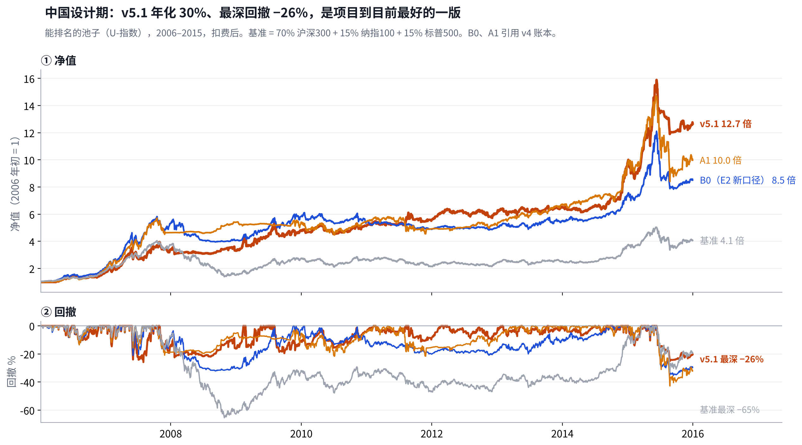
| v5.1 | E2 新口径 | A1 | 基准 | 判定 | |
|---|---|---|---|---|---|
| 能排名的池子 年化 | 30.1% | 24.9% | 27.0% | 15.6% | 最好 |
| 最大回撤 | −26% | −35% | −43% | −65% | 最浅 |
| 当年真能买到的池子 年化 | 15.8% | 8.7% | 23.7% | 15.6% | 险过基准 |
| 美国 ETF（2003–2026）年化 | 1.3% | 7.0% | 9.0% | 8.2% | 不成立 |
04怎么做的
先冻结规则，再一步一步跑，每一步都独立复算
| 步骤 | 做了什么 | 结果 |
|---|---|---|
| 审预注册 | Reviewer 两轮审稿：第一轮退回 2 处必须改（卖后不买回没写清；画像不是按最终规则算的），改完复审签收 | 冻结 （标签） |
| 实现、复算 | Dev 实现 28 把尺子、两条腿、每天减仓、单只替换、默认国债；Reviewer 用独立实现抽样复算读数和持仓 | 逐位一致 |
| 设计期 | 2006–2015 两个池子；同次跑随机挑选、同结构随机、等权版、波动比版 | 见第 5、6 节 |
| 别的市场 | 美国、发达市场、新兴市场三组 ETF，规则一个数都不改；同次跑 E2 式、A1、随机 | 见第 8 节 |
| 稳健性 | 17 行：成本、时点、门槛、结构各改一处 | 见第 11 节 |
每一步一个 PR，Reviewer 签收后才合入。账本 30 行；判据 ⑤ 只数可能入围的配置。中国数据只用到 2015-12-31。
05过关
7 条过了 5 条，栽在“换个市场”和“顺应市场”
| 条 | 要求 | 结果 | 判定 |
|---|---|---|---|
| 0 先赢随机 | 年化 ÷ 回撤高于随机挑选的 95 分位 | 两个池都高于全部 2000 次；同结构随机（只把挑选换成随机、仓位档位照抄）也高于 99.8% | 通过 |
| 1 跑赢基准 | 十年年化高于基准，四格不明显跑输 | 能排名的池子 30.1%，可交易池 15.8%，基准 15.6% | 通过 可交易池险过 |
| 2 不明显输给 A1 | 相对 A1 的 t 值不低于 −2 | 能排名的池子 +0.45，可交易池 −1.03 | 通过 |
| 3 赢过更简单的版本 | 高于等权版、波动比版 | 等权版 28.5%，波动比版 14.4% | 通过 |
| 4 回撤不比基准深 | 最大回撤不深于基准 | −25.9%，基准 −65.5% | 通过 |
| 5 别的市场也成立 | 美国 ETF 上赢随机、赢基准 | 年化 1.3%，基准 8.2% | 未通过 |
| 6 顺应市场 | 牛市超额 ≥ 0；反弹 t 值 ≥ −2 | 牛市 −28；反弹 t 值 −2.36 | 未通过 |
第 2 条通过，A1 的退路不启用；入围名单只有 E2 新口径。这些都是跑之前写死的，看到结果以后不改。
06哪里赢、哪里输
赢在熊市和急跌，输在牛市和反弹
| 四种行情（能排名的池子，相对基准） | 累计超额 | 判定 |
|---|---|---|
| 熊市（大势跌、本月跌） | +131 | 大赢 2008 年八成多在国债 |
| 回调（大势涨、本月跌） | +45 | 赢 回撤面过半当天减仓 |
| 牛市（大势涨、本月涨） | −28 | 输 回调时常被减到半仓，换手又多 |
| 反弹（大势跌、本月涨） | −37 | 输 趋势规则天生落后 |
累计超额 = 该行情所有日子的日超额之和 × 100（百分点，不四舍五入）；行情按沪深300 过去 12 个月和这个月的涨跌划分。
| 年份 | v5.1 | E2 新口径 | A1 | 基准 | 谁好 |
|---|---|---|---|---|---|
| 2006–07 | 74%、93% | 106%、156% | 97%、136% | 83%、104% | 大牛市里 v5.1 最少 |
| 2008 | −1% | −23% | +16% | −60% | A1 最好，v5.1 第二 |
| 2009 | 45% | 43% | 0% | 83% | 都跑输基准 |
| 2010–13 | 7、8、9、8% | −7、−10、2、10% | 0、−10、5、30% | −4、−18、12、5% | v5.1 最稳 |
| 2014 | 49% | 35% | 44% | 45% | v5.1 最好 |
| 2015 | 30% | 15% | 3% | 10% | v5.1 最好 |
07换一种检验方式：任意时点买入，都要比基准好
能排名的池子里，任何一个月初买入、持有 5 年，v5.1 都跑赢基准（58 个起点全赢，最差也每年多 1.5 个点）。但在当年真能买到的池子里，只有 34% 的起点跑赢；十年 15.8% 的年化，主要来自 2006 年和 2014–15 年。
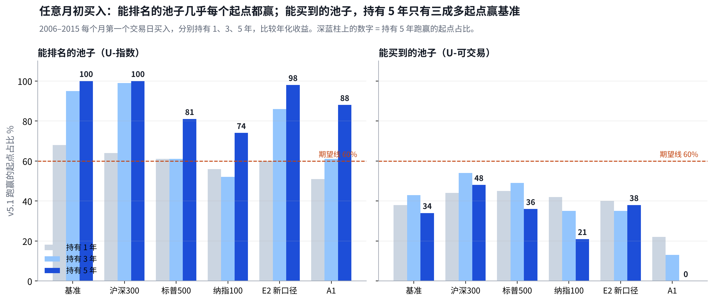
| 持有 5 年（58 个起点） | 能排名的池子 | 能买到的池子 | 读法 | ||||
|---|---|---|---|---|---|---|---|
| 跑赢的起点 | 中位 | 最差 | 跑赢的起点 | 中位 | 最差 | ||
| v5.1 对基准 | 100% | +16.6 | +1.5 | 34% | −1.5 | −12.2 | 两个池子判若两样 |
| E2 新口径 对基准 | 64% | +4.8 | −4.8 | 29% | −3.5 | −12.9 | 入围的那一版，能买到的池子同样弱 |
| A1 对基准 | 90% | +8.5 | −6.0 | 90% | +8.6 | −4.7 | 只有 A1 两个池子都稳 |
| v5.1 对 E2 新口径 | 98% | +9.4 | −0.5 | 38% | −1.7 | −6.0 | 能买到的池子里 v5.1 也没稳赢 |
| v5.1 对 A1 | 88% | +6.9 | −2.6 | 0% | −9.3 | −14.9 | 能买到的池子里一次都没赢 |
2006–2015 每个月第一个交易日买入，持有 5 年（1260 个交易日），比较年化收益；中位、最差 = 每年多（少）赚的百分点。E2 新口径的数字和《v4 体检报告》第 4 节相差 1–3 个百分点，是起点取法不同（这里要求持满 1260 天）。
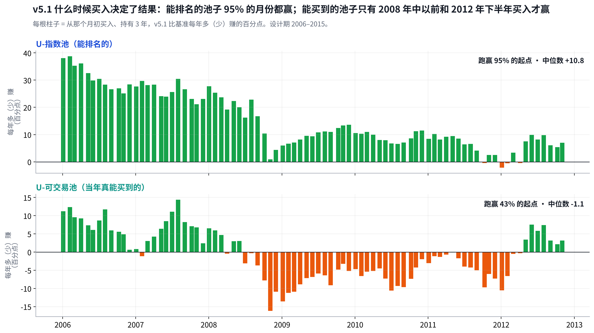
- 能买到的池子里，输赢由起点决定：2007 年下半年到 2008 年买入的，先躲过一轮大熊市，5 年赢基准 3–6 个点；2006 年初或 2009 年买入的，先碰上一段牛市，v5.1 跟不满，5 年每年少 3–12 个点。这和第 6 节的“赢在熊市、输在牛市”是同一件事。
- 为什么两个池子差这么多：两处。① 能挑的少：可交易池 2006–2012 年平均只拿得到 1.0–1.6 只（能排名的池子 1.7–2.7 只），A 股这一层常常只有沪深300，挑选的本事用不上。② 防守拿不到国债的收益：2008–2012 年可交易池里没有能买的国债基金，防守只相当于现金。2008 年 8–11 月，能排名的池子靠国债赚了约 14 个点，可交易池不到 1 个点。A1 一次拿一样、100% 仓位，① 对它没有影响。
- 持有越短越看运气：能排名的池子持有 1 年只有 68% 的起点跑赢，3 年 95%，5 年 100%。真金白银的人很少拿满 5 年，这是要你知道的一点。
08为什么换个市场就不行：优势依赖中国的急涨急跌
在美国 ETF 上，v5.1 扣费前 7.4%，已经低于基准 8.2% 和 E2 式 8.9%；换手又吃掉近 6 个点，只剩 1.3%。
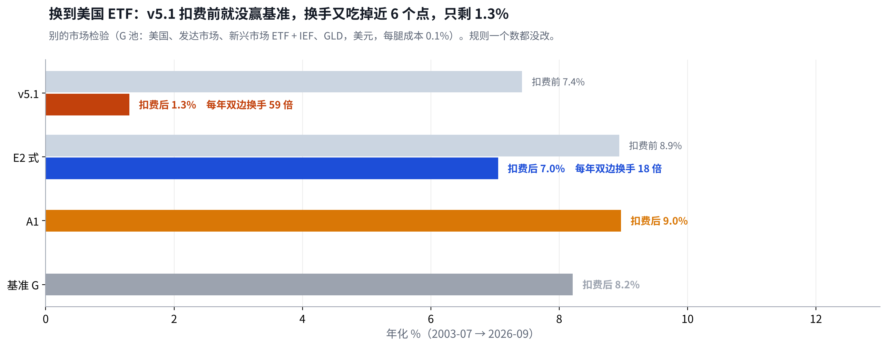
- 转折照样做得快：2008、2020、2022 年见顶后 5–34 天减到半仓；2009、2020 年见底后 4–17 天回到半仓。规则在美国也按设计在动。
- 但美国的牛市又长又平：回调浅，前沿在一半附近反复晃，仓位反复被减到一半。中国的牛市也一样（第 6 节牛市 −28），只是中国的大趋势和大崩盘够剧烈，快速离场的好处盖过了这部分代价。
- 所以中国十年的 30% 有相当一部分来自中国市场的特性：急涨急跌时，快速离场、快速回场很值钱；市场平缓时，同一个机制变成了来回付成本。别的市场检验要回答的，正是这个问题。
09换手
一大半来自仓位在满仓和半仓之间来回切
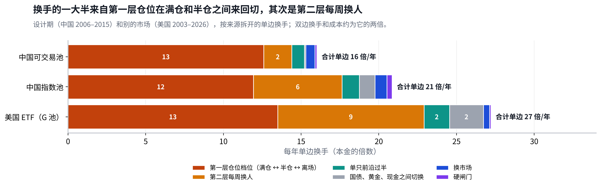
- 第一层仓位档位每年单边 12–13 倍，是最大的一块：前沿在门槛附近来回晃，每晃一次换一半仓位。
- 第二层每周换人中国 6 倍、美国 9 倍：每周按水平重排前 3，排名稍一变动就换。
- 合计双边换手每年中国 43 倍、美国 59 倍，成本中国约 3 个点、美国近 6 个点；同一个美国池子里 E2 式只有 18 倍。
我的错疼痛表写的是“震荡时每年多花约 1–2 个百分点”，实际中国约 3 个点、美国近 6 个点。画像里其实已经有这些次数（十年 187 次档位变动、176 次每周换人），是我在“跑前五问”第 4 问上停在了“数次数”，没有往下走一步“算成本”。以后的跑前评估要把触发次数直接换算成每年的换手和成本。
10跑前预判对照
年份预测大多对了，成本和换个市场估错了
| 跑之前写下的 | 实际 | 对了吗 |
|---|---|---|
| 2006–07 比 E2 新口径少赚 | 74%、93% 对 106%、156% | 对 |
| 2008 略好 | −1% 对 −23% | 对 好得比预想多 |
| 2009 少赚 | 45% 对 43%；基准 83% | 一半 跑输基准，没输 E2 新口径 |
| 2010–14 明显多赚 | 五年里四年多赚 | 对 |
| 2015 略好 | 30% 对 15% | 对 好得比预想多 |
| 回撤比 E2 新口径浅 | −26% 对 −35% | 对 |
| 可交易池明显好于 E2 新口径 | 15.8% 对 8.7% | 对 |
| 转折时点落在疼痛表里 | 见顶 8–27 天减半，见底 10 天回半仓、45 天满仓 | 对 和画像完全一致 |
| 震荡时每年多花 1–2 个点 | 中国约 3 个点，美国近 6 个点 | 错 漏算了换手的成本 |
| 别的市场约一半能过 | 1.3%，远低于基准 | 错 低估了对中国市场特性的依赖 |
| 入围的机会低于一半 | 不入围 | 对 |
11稳健性
中国的结果不靠参数和运气
| 改一处 | 年化 | 最大回撤 | 判定 |
|---|---|---|---|
| 原规则 | 30.1% | −26% | — |
| 成本加倍 | 25.8% | −27% | 稳 仍高于 E2 新口径 |
| 去掉最好的 1、2、3 个容器 | 31.0%、31.0%、30.8% | −25% | 稳 不靠个别品种 |
| 前沿门槛 0.4、0.6 | 28.9%、29.6% | −27%、−28% | 稳 |
| 长尺子放缓比 10、40 天前 | 26.0%、23.8% | −26% | 略敏感 |
| 噪音带 0.5、2 | 28.5%、27.9% | −27%、−28% | 稳 |
| 只在周末减仓 | 28.6% | −29% | 稳 每天减仓只多 1.5 个点 |
| 硬闸门 8%、12%、不设 | 31.6%、30.2%、30.0% | −25%、−26%、−27% | 稳 硬闸门主要是保险 |
| 第一层改为所有 ETF 一起排 | 26.8% | −32% | 先选市场更好 |
| 决策日延后 1 天 | 38.0% | −26% | 要警惕 晚一天反而多 8 个点，结果对成交时点很敏感 |
| 可交易池不含相近替身 | 18.4% | −29% | 稳 |
能排名的池子，扣费后，2006–2015。所有改动都只报告，不改判。
12学到了什么，接下来
读尺子的方法在中国是成立的：同结构随机对照说明，挑选本身有本事；见顶、见底、急跌的时点都和设计时的画像一致。
- 但它把“适应市场”做成了“频繁反应”：在门槛附近来回晃的成本，在平缓的市场里大于快速离场的好处。适应应该是“状态变了才动”，而不是“读数变了就动”。
- 别的市场检验是对的：没有它，我们会拿着中国十年 30% 的成绩进入一次性检验。
| 接下来 | 谁 | 状态 |
|---|---|---|
| 封板：v5 是封板前最后一个版本；v5.1 不再改（D34-1） | 你 | 已批准 |
| 一次性检验：2016-01 到 2026-09，两个池子同次跑 E2 新口径、A1、基准、v5.1；只有 E2 新口径能入围，v5.1 只作对照、不进模拟盘（D34-2、D34-3）。先写 LOCK，再跑，Reviewer 独立复算 | Grok | 进行中 |
| v6 的起点：① 第一层仓位加回差，减仓线和加仓线分开；② 第二层少换人，新的必须明显更强才换；③ 跑前评估把触发次数换算成成本。按 D27-5：设计证据 → 别的市场 → 至少 6 个月并行模拟 → 小资金起步 | 封板后 | — |
全部结果都经 Reviewer 独立复算签收（results/v5.1/）。
下面是 v5 原版的结论、过关、哪里赢输、四处结构硬伤、预判对照、稳健性和教训。“v5 最终版”都指原版。
原版 · 结论：v5 原版没有赢过 E2 新口径，不入围
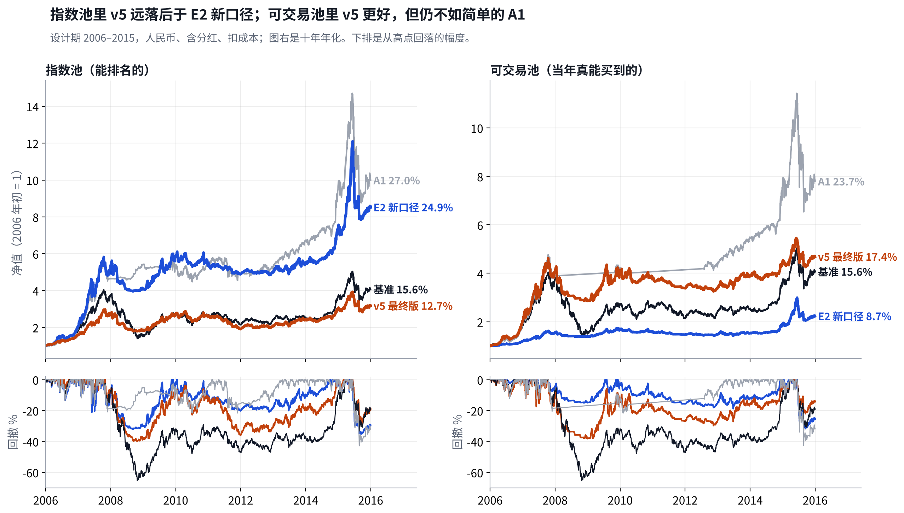
| 设计期 2006–2015 | E2 新口径 | v5 最终版 | 基准 | A1 |
|---|---|---|---|---|
| 指数池 年化 | 24.9% | 12.7% | 15.6% | 27.0% |
| 指数池 最大回撤 | −35% | −40% | −66% | −43% |
| 可交易池 年化 | 8.7% | 17.4% | 15.6% | 23.7% |
| 可交易池 最大回撤 | −32% | −38% | −66% | −43% |
v5 最终版 = 起点 + 10% 离场。绿、橙相对 E2 新口径。数字待 Reviewer 独立复算。
- 入围一次性检验的只有 E2 新口径。按 D27，v5 做完就封板，不论结果。
- 可交易池的好成绩不改变结论。它来自早年“能买的只有一两只时集中持有”。2016 年以后能买的品种多了，这个优势会消失；A1 在同样条件下仍高出 6 个百分点。
和随机挑比：E2 有真本事；v5 只是“少押一点的随机”
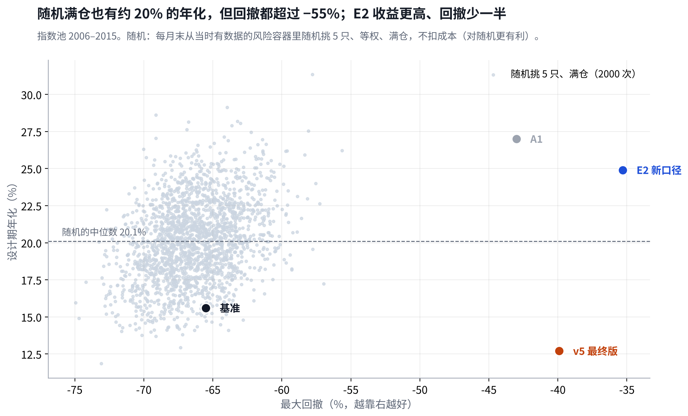
| 指数池 2006–2015 | 年化 | 最大回撤 | 年化 ÷ 回撤 | 在 2000 次随机里的位置 |
|---|---|---|---|---|
| 随机挑 5 只、满仓（中位数） | 20.1% | −67% | 0.30 | — |
| E2 新口径 | 24.9% | −35% | 0.71 | 年化高于 96% 的随机；年化 ÷ 回撤高于全部随机 |
| v5 最终版 | 12.7% | −40% | 0.32 | 年化低于全部随机；年化 ÷ 回撤和随机的中位数差不多（高于 62%）：没有挑选本事 |
| 基准 | 15.6% | −66% | 0.24 | 年化高于 4% 的随机 |
原版 · 设计依据：v4 的证据，和两条推错的推论
| v4 的发现 | 关键数字 | 可信度 | 当时的推论 |
|---|---|---|---|
| 该不该持有 | 趋势向上的下个月比现金多赚 1.2%，向下的 −0.2% | 2.4 倍 | 把力气放在这一层 |
| 挑哪一只 | 打分高的，下个月只是略好一点 | 1.1–1.6 倍 | 少押注挑选 |
| 独立机会 | 14 个 A 股容器 ≈ 1.4 个独立选择 | — | 按大类分开判断 |
| 超额从哪来 | 熊市选到国债、黄金贡献 +50 | — | 设一个防守位 |
| 池子小的时候 | 可交易池 E2 8.7%，A1 23.7% | — | 能买的少时集中 |
可信度 = 这个差别比“纯靠运气也会出现的波动”大几倍（统计上叫 t 值），2 倍以上才算比较可信。最后一列是当时从证据推出的设计方向；第 1 节折叠区的例子和第 8 节的持仓数据会看到，“按大类分开判断”和“设一个防守位”这两条推错了。
- 集中以前试过更差：探索阶段“把空位填满”，年化更低、回撤更深。当时判断 v5 的集中只发生在跑赢现金的大类之间，会不一样。第 8 节证明这个判断错了。
- A1 不是全面更好：指数池里和 E2 的差别只有运气波动的 0.4 倍；2015 年满仓扛了 −43%。
- 你的体感：7 月全球科技一起回落，8 月美股创新高、A 股科技反弹失败。7 月时没人知道 8 月会分化。这段行情只作规则冻结后的检验案例，不用来设计。
原版 · 怎么做的：先写死规则，再跑
账本 33 行（上限 45）。只用 2015 年以前的数据，没有算 2016 年以后的中国组合收益。标橙的一条如果没修，v5 和 E2 不在同一套交易条件下，所有比较都不成立。
原版 · 过关：两个部件各试一次，只有“10% 离场”留下；最终版没能入围
- v5 基础版只有“两层 + 防守位”，不加任何部件。
- 加按波动调仓和基础版比，没过，丢掉。
- 加 10% 离场还是和基础版比，过关，成为最终版。
- 最终版对 E2入围条件两条都不满足。
| 版本 | 前五年 年化超额 | 后五年 年化超额 | 牛市 | 回调 | 熊市 | 反弹 | 结果 |
|---|---|---|---|---|---|---|---|
| E2 新口径（参照） | +19.6 | +0.5 | −2 | +27 | +95 | −54 | — |
| v5 基础版 | −6.3 | −5.5 | −93 | +16 | +55 | −40 | 起点，只报告 |
| 基础版 + 按波动调仓 | −7.9 | −5.0 | −123 | +35 | +61 | −42 | 没过 牛市多亏 29 |
| 基础版 + 10% 离场 | −0.6 | −5.0 | −92 | +28 | +65 | −39 | 过关 = 最终版 |
| 最终版能不能入围（D29） | 要求 | 实际 | |
|---|---|---|---|
| (a) 收益更好 | 前后五年都赢 E2 新口径 | 前五年 −0.6 对 +19.6 | 不满足 |
| (b) 收益差不多、回撤更浅 | 前后五年都不少于 2 个点，回撤浅 5 个点 | 前五年少 20 个点；回撤反而深近 5 个点 | 不满足 |
原版 · 哪里赢、哪里输：输在大牛市和下跌年份
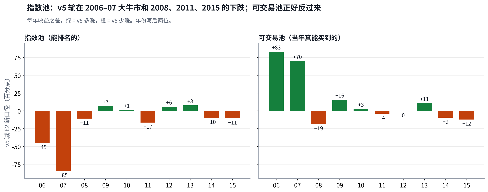
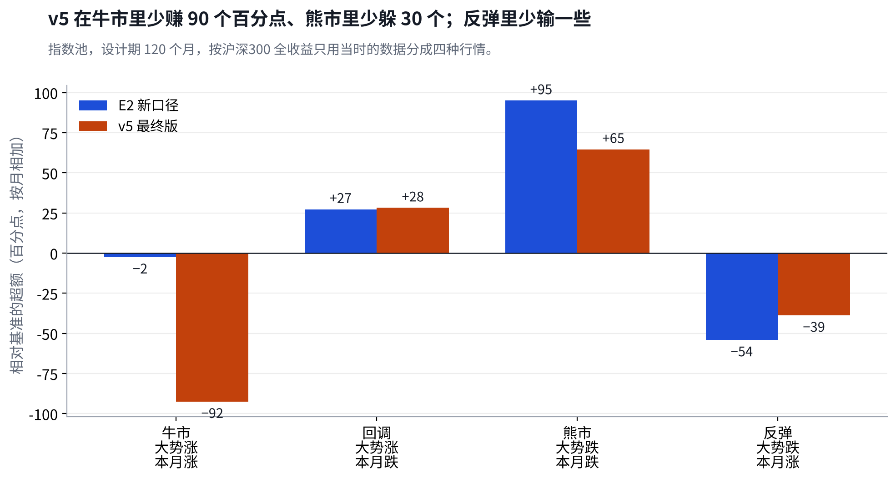
- 牛市：E2 −2，v5 −92。这是最大的一块损失。
- 熊市：E2 +95，v5 +65。v5 本来就是为“不输”设计的，结果熊市里反而躲得更少。
- 反弹：v5 少输 15。这是 v5 唯一占优的行情，因为它弱市里仍在场内。
原版 · 为什么输：四处结构硬伤，都违背了“优中选优”
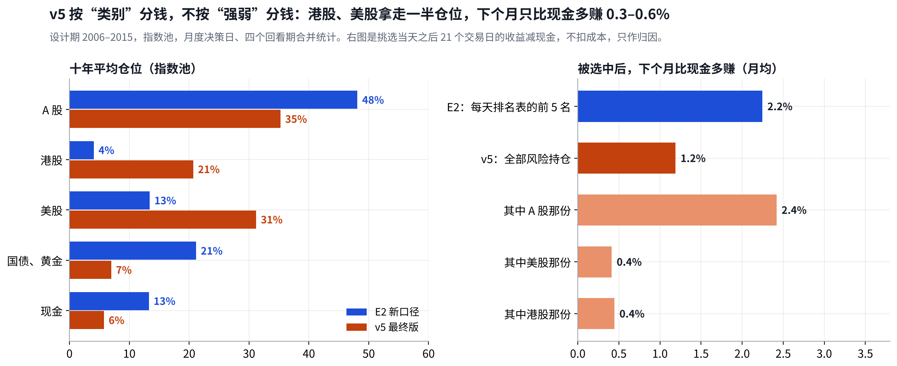
| 硬伤 | 规则怎么写的 | 错在哪 | 设计期的数据 | 本该怎么做 |
|---|---|---|---|---|
| ① 挑选放错了层 | 先分五类，每类只挑最强的一只 | 强弱差别主要在不同市场之间；同一类的容器同涨同跌，类内挑谁差别很小。v5 留下了弱的“类内挑选”，把强的“跨类挑选”换成了平分 | 港股那份在全局排名中位第 10，68% 不在前 5；下个月只比现金多赚 0.4%，A 股那份 2.4% | 一张全局排名表；类别只做上限（例如每类最多 2 只），不做配额 |
| ② 门槛最松，仓位一样 | 类里任一只跑赢现金，这类就开；开着的类平分 | “任一只”是最松的门槛，成员越多越容易开。跑赢现金 0.1% 和 80% 拿一样的份额：强弱只用来开门，不用来分钱 | 风险持仓的得分只有当天最高分的 54%（中位）；32% 的风险仓位在全局前 5 以外 | 门槛 = 跑赢现金且进全局前 N；或仓位随得分递增 |
| ③ 防守是开关，不是竞争 | 风险大类全部关掉，才用国债、黄金 | 门槛太松，“全部关掉”很少发生。E2 让国债黄金和股票同场排名，股票一弱防守就逐步排进来，这正是 E2 回撤减半的来源；v5 把它拆掉了 | 只有 10% 的时间触发；防守加现金平均 13%，E2 是 34%；“去掉防守位”的检验几乎没变化 | 防守资产留在同一张排名表里，随时可以排到前面 |
| ④ 五类其实只有三类 | A 股、港股、美股、其他海外、商品 | 设计期里“其他海外”一次没开过，商品只占 0.2%。实际就是“A 股、港股、美股各三分之一”加开关。A 股和港股都是中国风险，2008 年一起跌，分散只是表面上的 | v5 平均给港股 21%，E2 只给 4% | 定类别前先看设计期里“真正有数据、有独立走势”的类别有几个 |
比四条规则更根本的：研究流程上的三处错
以后每个版本跑之前，先过这五问（建议成为预注册的固定一节）
- 钱是否跟着强弱走？有没有可能让一个弱品种拿到和最强一样多的钱？
- 挑选发生在哪一层？那一层的品种之间差别大不大，独立选择有几个？
- 防守是一直在竞争，还是到极端才打开？
- 每个类别、每个开关，在设计期里实际触发过几次？从没触发的就是空壳。
- 同结构去掉信号还剩多少？先和随机挑选比，再和基准比。
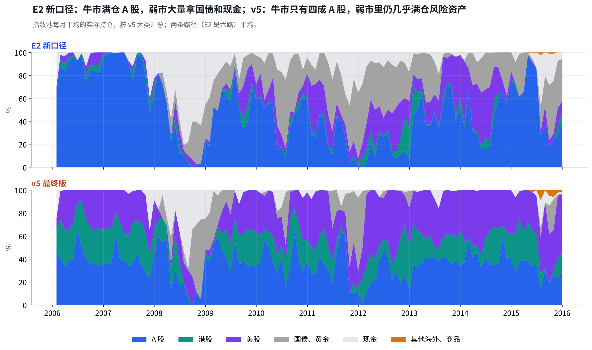
| 年份 | E2：A 股 | v5：A 股 | E2：国债黄金和现金 | v5：国债黄金和现金 | v5 相对 E2 |
|---|---|---|---|---|---|
| 2006–07 大牛市 | 86% | 40% | 6% | 3% | 少赚 130 个点 |
| 2008 熊市 | 27% | 26% | 67% | 53% | 多亏 11 个点 |
| 2011 弱市 | 25% | 33% | 54% | 23% | 多亏 17 个点 |
| 2012 震荡 | 14% | 25% | 50% | 6% | 多赚 6 个点 |
- 原因一：牛市里平分了仓位 “跑赢现金的大类平分”，2006–07 年港股、美股也在涨，A 股只分到四成。E2 是一张排名表，A 股的十几个容器挤满了前几名，几乎满仓 A 股，这十年最大的一段行情它吃满了。
- 原因二：防守的门槛太高 v5 只有在五个风险大类全部不跑赢现金时才放国债、黄金。五类里总有一类短期在涨，于是弱市里 v5 几乎一直满仓风险资产，只剩一类时还全押在它身上。E2 让国债、黄金和股票同场排名，股票一弱，国债就自然排进前几名。
持仓数字来自对已登记两个配置的复跑，复跑净值与登记逐日一致；脚本 results/v5/diag/memo/holdings.py。
原版 · 跑前预判对照：猜对三条，猜错三条
| 行情 | 预判（相对 E2） | 实际 | |
|---|---|---|---|
| 2006–07 A 股大牛市 | 更差 | +61%、+72% 对 +106%、+156% | 猜对 |
| 2008 熊市 | 相近或略好 | −34% 对 −23% | 猜错 |
| 2009 反弹 | 相近 | +50% 对 +43% | 大致对 |
| 2010–13 震荡 | 略好 | 2012–13 更好，2011 年 −26% 对 −10% | 猜错 |
| 2015 急跌 | 相近 | 全年 +4% 对 +15% | 猜错 |
| 可交易池 | 明显更好 | 17.4% 对 8.7% | 猜对 |
猜错的三条都是同一个原因：防守是开关不是竞争（第 8 节硬伤 ③），下跌市里 v5 留在场内。这是设计错了，不是代码错了。
原版 · 稳健性：结论不靠运气和参数；唯一明显的改善指向“集中”
| 检验 | 在担心什么 | 怎么做 | 结果（前五年 / 后五年） |
|---|---|---|---|
| 邻近回看期 | 1、3、6、12 个月是不是刚好挑在“峰顶”，换一点就塌 | 换成稍短、更短、更长三组 | −3.5～−1.3 / −0.3～+1.6：不塌 |
| 成本加倍 | 交易费用被低估 | 所有费用 × 2 | −1.9 / −1.9 |
| 晚一天成交 | 实盘来不及在信号当天收盘下单 | 推迟一个交易日成交 | 0 / +0.6 |
| 去掉最好的 1、2、3 个 | 十年的成绩是不是靠一两个“明星”撑着，换个年代就没了 | 把十年里涨得最多的 1、2、3 个容器从池子里拿掉再跑 | −0.3～+1.7 / +0.2～+1.2：不靠明星 |
| 离场线 8%、12% | 10% 是不是刚好最好 | 改成 8% 或 12% | −2.1～−0.9 / −0.1～+0.3 |
| 不设防守位 | 防守位到底有没有用 | 五类都不跑赢时直接拿现金 | −0.4 / +0.1：几乎没用 |
| 固定预算（A2 式） | 平分给“跑赢的”是不是不如每类固定一份 | 五类各 1/5，没跑赢的那份放防守 | 0 / +1.2 |
| 只持最强的一类（A1 式） | 平分是不是比集中更差 | 每个回看期只持最强的那一个大类 | +11.4 / +7.7 |
指数池，数字是相对 v5 最终版的年化超额变化（百分点）。按预注册只报告、不改判，也不能拿来替换 v5。“不设防守位”几乎没有影响，正好印证了第 8 节硬伤 ③：防守位十年里只在 10% 的时间打开。
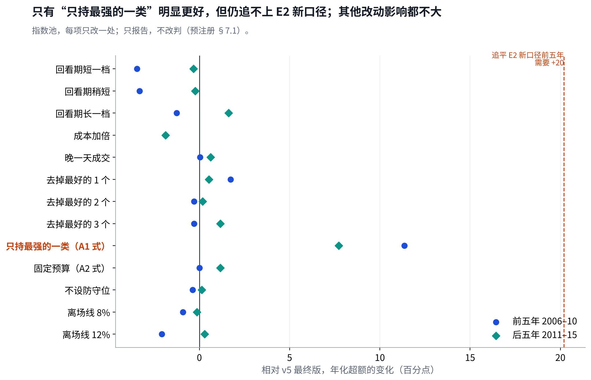
学到了什么
这些都是封板后 v6 的线索，按 D27 走“设计证据 → 别的市场 → 并行模拟”的路径，不改 v5。
原版 · 接下来：先把 v5 策略讨论清楚，再写预注册
- 讨论策略排名怎么比、持几只、空位放什么、同类挤占怎么办；逐条过“跑前五问”，写事前画像。
- 预注册设计定下来再写定稿；Reviewer 复核、你批准后冻结。
- 设计期和别的市场各跑一次，逐条对照事前画像。
- 封板、一次性检验你定期望线和以哪个池子为准；入围的策略跑 2016 年以后，只跑一次。
v5.1 预注册草案（E2 + 每类上限）已入库作为讨论稿，暂不冻结。原版不再做别的市场检验（你已确认）。v5 策略讨论清楚、过完“跑前五问”之后，再写定稿预注册。
- 封板：v5 是最后一个研究版本；D30-2 允许一次设计缺陷修正（v5.1），之后只修程序错误。一次性检验只跑一次。模拟盘只上一个，12 个月不切换，看性格不只看收益。尝试次数有上限，结果按次数打折扣。
- 封板之后：新想法记作 v6，可用全部历史设计，和在跑的策略逐项比；上线前过别的市场检验和至少 6 个月并行模拟，小资金起步。
- 急跌和期权：三周跌完的行情趋势规则躲不开。境内期权数据大多在 2019 年以后；期权研究备忘待写，正式研究放到封板后。
- 结论报告的六项：性格、四种行情、任意起点、优劣对照、市场和时代的变化、适应性。